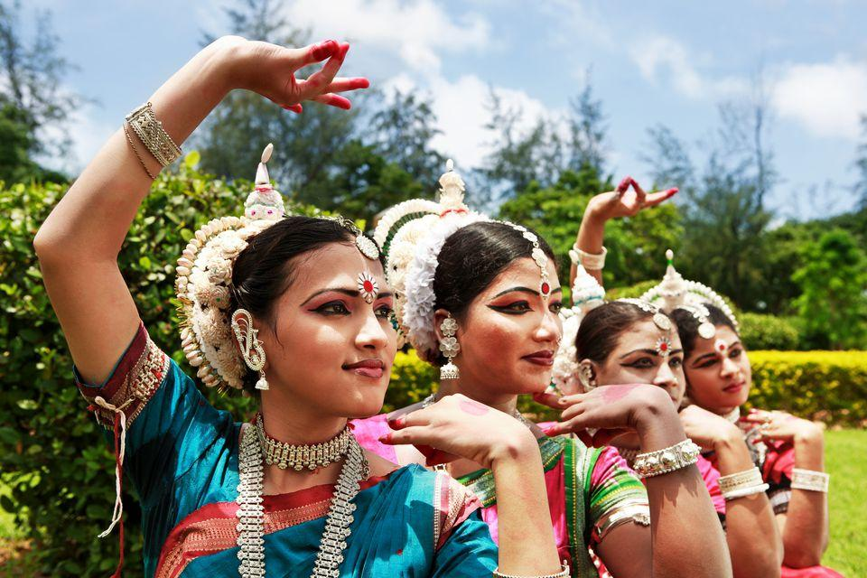
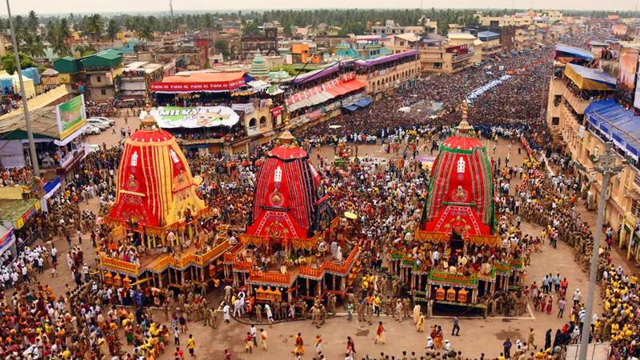
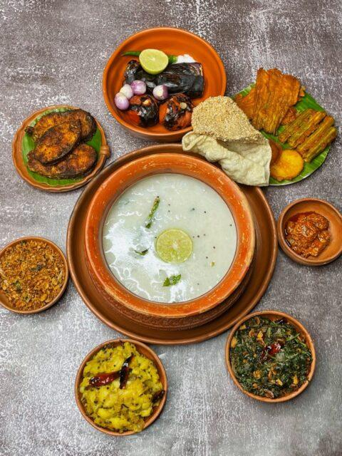

Bhubaneswar is rich in art, music, dance, and traditions. Odissi dance is one of the most famous classical dances performed in Odisha.
Festivals like Rath Yatra, Durga Puja, and Raja Festival are celebrated with joy and enthusiasm.
Traditional handicrafts, handloom sarees, and delicious Odia food reflect the vibrant culture of the city.


